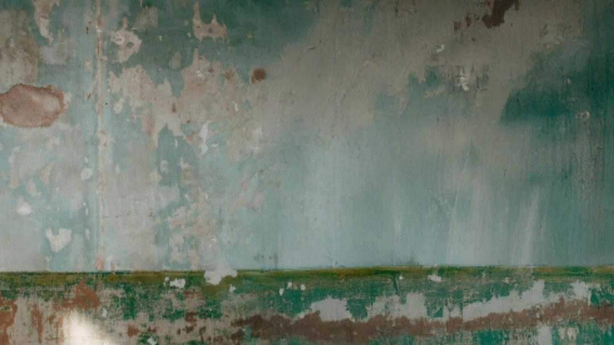
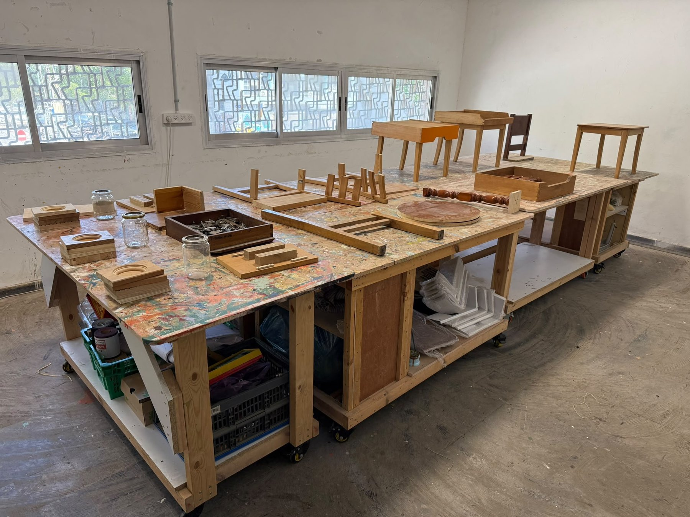
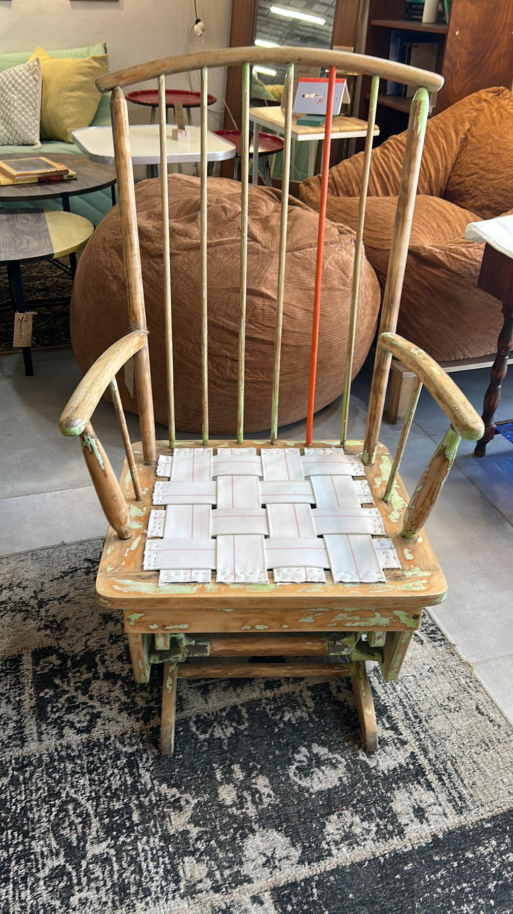
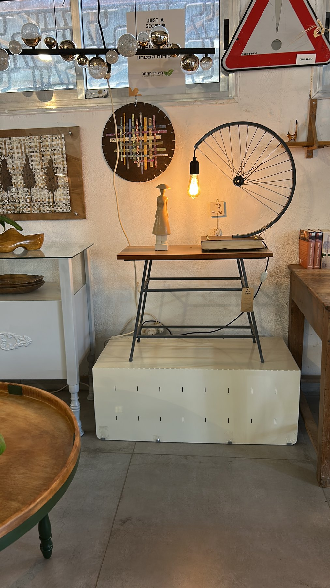
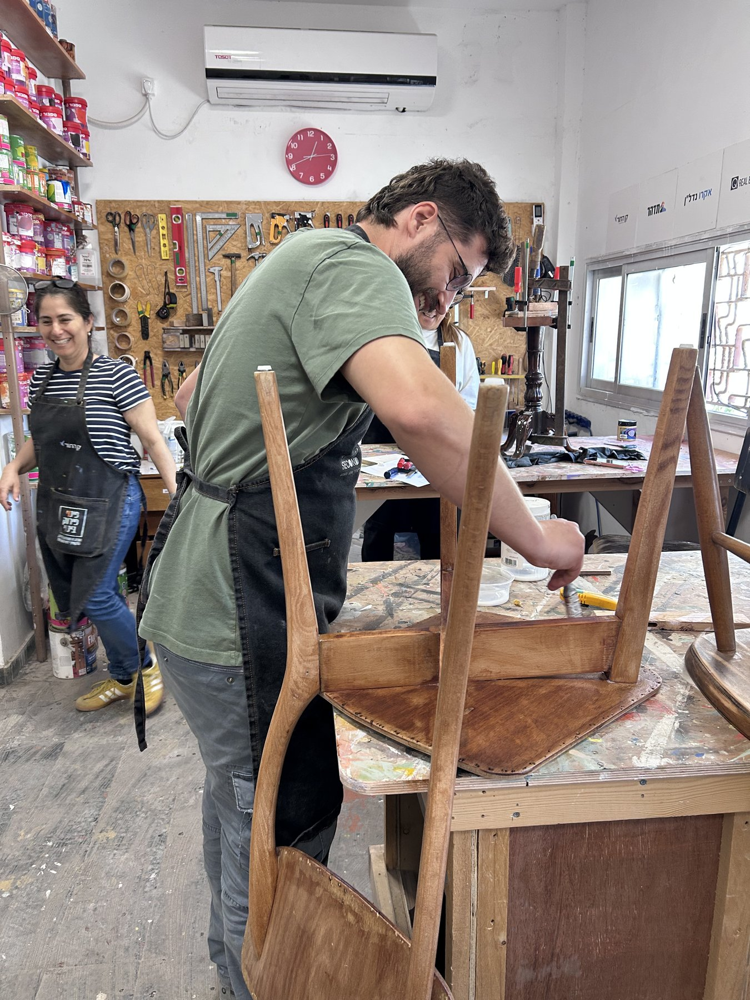
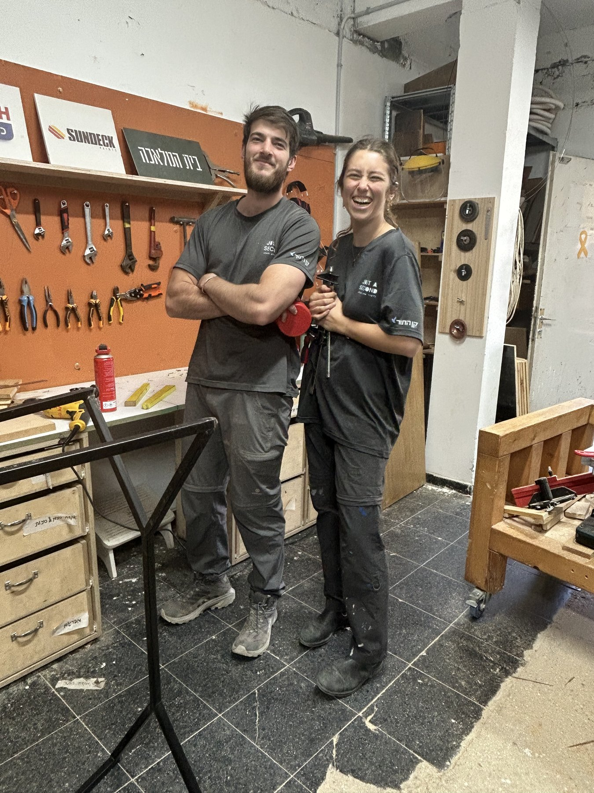
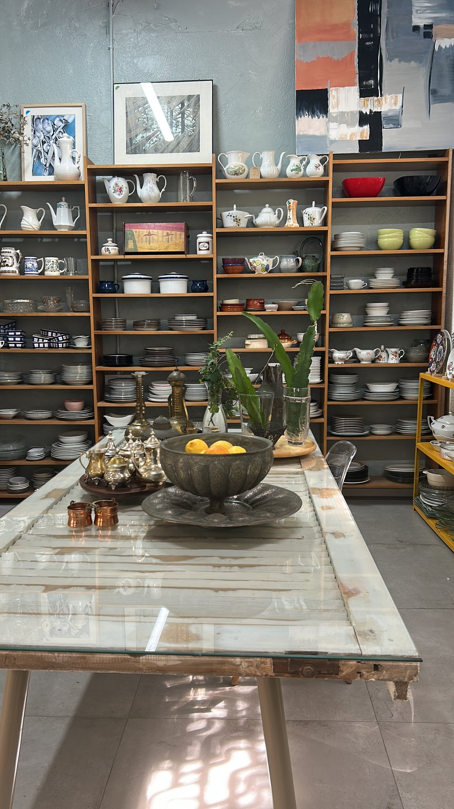
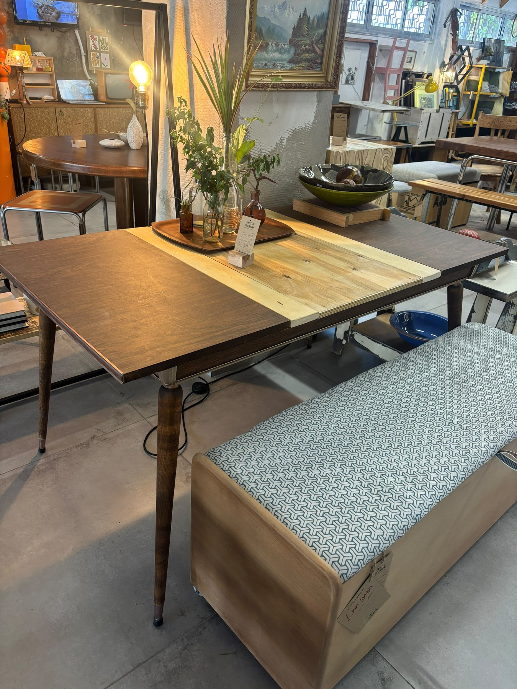
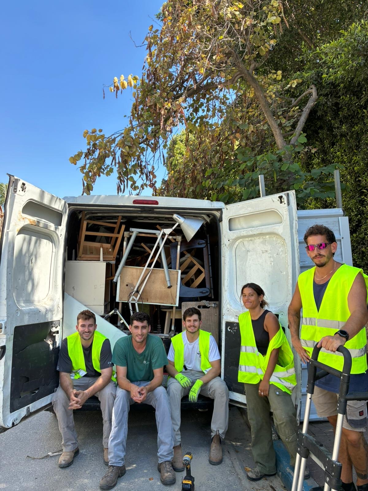
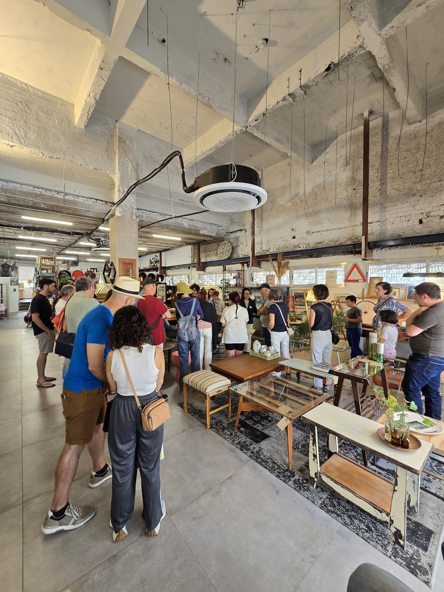

Two years of action · One year of transformation
Creating abundance from the abundance that already exists
An environmental, social and economic model for reuse and refurbishment
In just two years, Just a Second has grown from an innovative initiative into Israel's leading brand in selective deconstruction for urban renewal, the creation of reuse and recycling campuses, circular economy and circular design.
Key achievements
Positioning & brand
Systemic impact
Social impact
Today Just a Second is far more than an environmental organization — it is a brand, a community and an engine for change in urban renewal, circular economy and reuse in Israel.
Policy change
Policy change is a long process. It does not happen in a day, and it does not happen alone. Changing the way a country, its municipalities, its developers and its public relate to the materials, objects and resources already around us takes professional work, proof on the ground, persistence — and above all partners willing to walk a new path even before it has been paved.
Over the past year Just a Second made a significant leap forward: we established our campus at 34 Begin Road, expanded the shop and the workshops, developed tours, lectures and hands-on sessions, integrated volunteers and reservists, built organizational and technological infrastructure, and deepened our work with developers, municipalities and policymakers.
This was the year we moved from a pioneering idea to a model that works on the ground — an environmental, social and economic model for reuse, refurbishment, selective deconstruction and urban mining.
A year of transformation
of items, materials and resources rescued from landfill
the heart and soul of Just a Second
integrated into our work between rounds of reserve duty
a digital community on Instagram and Facebook
in the green building standard for selective deconstruction
a donation to mental-health support for combat soldiers
From social venture to leading brand
One of the most significant leaps Just a Second made this year is not measured only in apartments vacated or tons of materials saved, but in the public standing we built. In a short time, Just a Second has become one of the organizations most identified in Israel with selective deconstruction, reuse, circular economy and urban renewal.
Over the year we introduced a new vocabulary into the field. Terms such as "selective deconstruction", "creating abundance from existing abundance", "circular design", "circular economy" and "reuse and recycling campuses" have become part of the professional and public conversation, and we are identified with advancing innovative solutions that carry environmental, social and economic value.
Just a Second's public visibility has grown substantially. Every month hundreds of participants join us for tours, lectures and events, and we are regularly invited to professional conferences held by developers, municipalities, government ministries, the Israel Green Building Council, architects, designers, academic institutions, organizations and delegations from Israel and abroad.
Perhaps the most meaningful achievement is how people respond. Visitors tell us again and again that they leave moved, inspired and wanting to be part of the work — and it shows in new partnerships, in invitations to lectures and conferences, and in the waiting lists of volunteers and reservists asking to join.
Today Just a Second is far more than an environmental organization — it is a brand, a community and a hub of inspiration leading change in Israel's circular economy.
For a developer, working with Just a Second is not just a deconstruction and reuse service — it is joining a national movement that is steadily gaining public, professional and media recognition.
A major systemic achievement
Within Standard 5281 for green building, under the innovation clause, specific provisions for selective deconstruction in urban renewal projects have been added — a move that can earn developers up to three points, which carry significant weight under the standard.
These are still early steps, but they represent important recognition that selective deconstruction, reuse and urban mining are not a one-off environmental initiative, but a professional component that can be measured, incentivized and embedded into construction and urban renewal processes.
A revision of the standard is expected soon, and we are working to ensure the field enters the standard itself in a clear and structured way — not only through the innovation clause. For us, this is a significant step toward turning selective deconstruction from a practice that depends on goodwill into one that is recognized, incentivized and measurable.
These processes are only possible thanks to the cooperation and commitment of the professionals at the Ministry of Environmental Protection, the Israel Green Building Council, green building consultants and the planning authorities.
Development partners
Precisely during a slowdown in the real estate and urban renewal sector, we managed to widen the circle of developers and companies choosing to explore a new model of selective deconstruction and reuse with us.
Just a Second is also in contact with "HaMe'argenim" (The Organizers), who support the initiative and help advance it.
Our vision is that every major city in Israel will have a reuse and refurbishment campus — an urban home for making, repairing, workshops, education, community and experience. A place where objects and materials can be directed to be rescued, restored, sold, passed on or turned into new raw materials. For that vision to happen, municipal policy has to change — in how authorities treat bulky waste, apartment clearance, tenders, incentives and systems for collection, sorting and reuse. Over the past year we met with mayors and senior officials from various municipalities, regional clusters and more — and the question on the table is:
Which city will be the first to build a reuse and refurbishment campus?
Our model in practice
We don't just rescue items from demolition — we build them a full route back into use. A model that closes the loop: from mapping apartments before demolition all the way to their actual return to the consumption cycle.
Furniture, light fixtures, air conditioners, aluminum, doors, kitchens, raw materials and design pieces — a practical alternative to the clear-out-and-landfill model.
Savings in manufacturing new items, in roughly 200 km of haulage to landfill and in landfilling itself — a real reduction in greenhouse gas emissions.
A practical, proven working protocol for selective deconstruction that closes the full loop — from mapping, through deconstruction, haulage, sorting and repair, to sale. An end-to-end solution, the only one of its kind in Israel.
A system that maps the resources left in apartments before demolition and turns existing abundance into data: what is there, in what quantities, and what its reuse potential is.
Integrated into selective deconstruction, haulage and the workshops — a space for work, making, belonging and meaning during a difficult period.
Every quarter, part of the proceeds goes to the "Bishvil HaMachar" association, which provides mental-health support to combat soldiers.
An active volunteer community in restoration and refurbishment, alongside tours, workshops and lectures that introduce children, teens and organizations to conscious consumption and environmental responsibility.
A public presence that promotes conscious consumption and consuming less, with a digital community on Instagram and Facebook.
A map bringing together businesses, makers and interesting places in the area — encouraging local footfall, supporting neighborhood businesses and strengthening urban tourism around the campus. View the map ›
Building a sustainable economic model based on sales, workshops, events, work with developers and collaborations with companies and municipalities.
Shop-gallery, special sales, garage sales, tours, lectures, workshops and events — the beginning of a stable economic base that reduces dependence on any single source.
New jobs and roles around selective deconstruction, refurbishment, restoration, sales, guiding and community management — the foundation for circular economy professions.
The campus at 34 Begin Road has become an attraction that draws visitors, encourages wandering and strengthens local businesses — a basis for a broader urban model.
Adopt a Reservist
For nearly three years, reserve duty has shaped daily life for young Israelis — studies interrupted, jobs hard to hold on to, and every plan made with an asterisk, because the next call-up can come at any moment.
At Just a Second, employing reservists is a core part of what we do. Between rounds of service, reservists do the selective deconstruction and upcycling work — flexible, hands-on and meaningful. We call it healing by doing.
Every item they restore is sold in our gallery-shop, and the profits go toward mental-health support for combat soldiers and veterans.
More and more reservists want to join us. Our only constraint is funding. That is why we created "Adopt a Reservist".
Fund one workday — or several.
100% of every donation goes directly toward employing reservists. The more we raise, the more workdays we can offer — and the more reservists we can welcome with a resounding "yes".
Adopt a ReservistDonations are tax-recognized in Israel — Israeli taxpayers are entitled to a 35% tax credit under Section 46.
Give a day of work. Give someone a place to return to.








Organizational infrastructure and circle of support
Over the past year we built the organizational infrastructure that lets Just a Second operate as an independent, growing organization — management, operations, finance, legal, insurance and working processes. Alongside it, a significant circle of support has formed: people who bring experience, knowledge, connections and trust in the path.
Board members
Chairman of the Board, IBI
Faculty member at the Harry Radzyner Law School and General Academic Director of the Arison ESG Center at Reichman University
Co-Managing Director, Russellberrie Foundation Israel
Ongoing pro bono professional support
Former partner at Deloitte · Strategic advisory
Former owner of the logistics company "Hovalot Im Shachar" · Business mentoring
Former CEO of NeoGames
Former CEO of Orbotech · Board chairman at technology companies
Marketing advisory
Alongside them we are supported by professionals, environmental experts, legal counsel, planners, green building consultants and business and public partners — who help connect the work on the ground to the systemic change we are driving.
With gratitude
Looking ahead
A year ago Just a Second was a vision that had found a home. Today it is a living organization, an active campus, a growing community and a partnership with developers and municipalities — and a genuine attempt to change the way Israel treats the resources it already has.
This is only the beginning.

Creating abundance from existing abundance
Want to collaborate, visit the campus, run a workshop or join the journey? We'd love to hear from you.